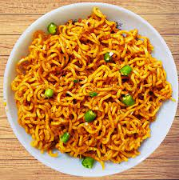

MAGGIE

Description
Maggi noodles are dried noodles fused with oil, and sold with a packet of flavorings. These noodles are usually eaten after being cooked in boiling water for 3 to 5 minutes or eaten straight from the packet. Just boil the water, add the tastemaker and noodles and your maggi is ready within 2 to 3 minutes.
Ingredients
- gm maggi noodles
- 1 teaspoon butter
- 1/4 cup peas
- 1 tomato
- 1 green chilli
- 1/4 teaspoon garam masala powder
- 12 gm maggi masala
- 1/4 teaspoon powdered black pepper
- 1/2 onion
- 1/2 teaspoon garlic paste
- 1/4 teaspoon powdered turmeric
- 1/2 capsicum (green pepper)
- 1/4 tablespoon red chilli powder
- 1/2 teaspoon chaat masala powder
- salt as required
- 2 1/2 cup water
Steps
- Boil water & chop the veggies
- Cook Maggi and saute veggies in a separate pan
- Add spices
- Garnish and enjoy